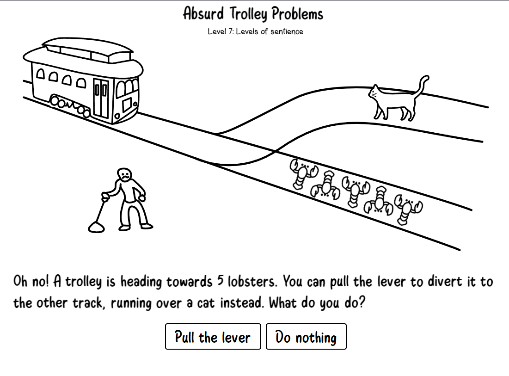
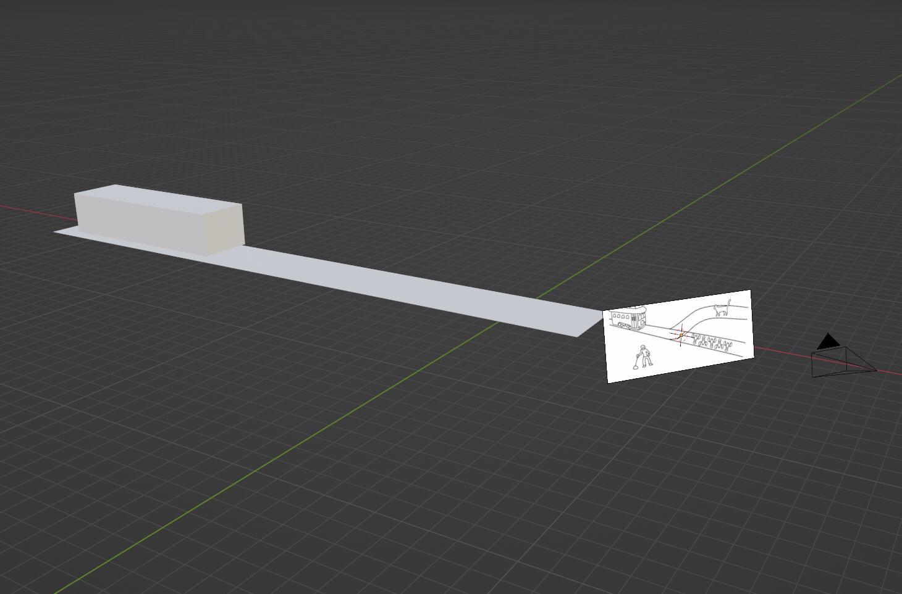

The problem
The trolley problem in question from neal.fun:
This is the problem in question. The first thing I wanted to figure out was how much force does the tram have (I will be calling it tram for most of this paper as trolley can get confused with a shopping trolley). I decided to first calculate the speed of the tram as it feels like a simple thing to do, there is an animation of the trolley in motion on the website after you make a choice. So all that needs to be done is to get a scale and measure the distance it moves in a second. Luckily, there's a standard width for tram tracks which is 1,435 millimetres. Knowing this I decided the easiest way to proceed was to create a new scene in blender and then import this image. I locked the image to my camera then created a long plane and lined the edges up to the ones in the photo.
Blender scene:
